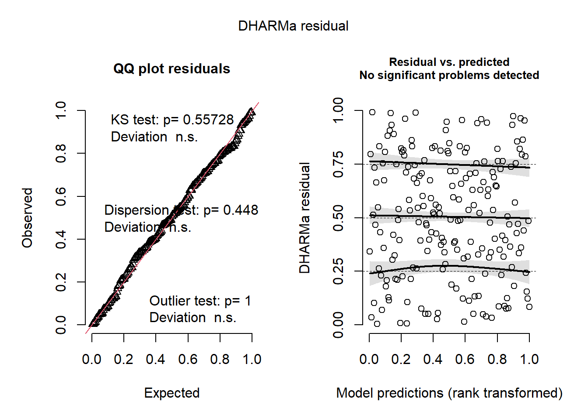
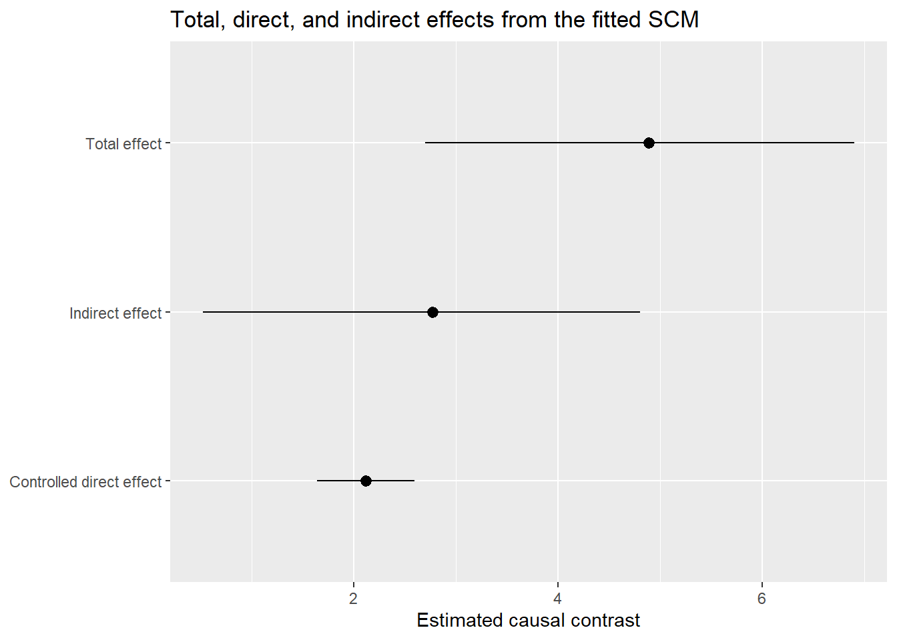

library(tidyverse)
library(mgcv)
library(dagitty)
library(igraph)
library(broom)
library(furrr)
library(future)
library(gratia)
library(DHARMa)33 SCM: Direct/Indirect Effects
33.1 Workspace set-up
33.2 Introduction to causal decomposition
In the previous section, we saw an example of using a DAG-derived adjustment set to estimate the total effect of X on Y. For this next component, we will use the same DAG that encodes our causal knowledge about the study system. Specifically, this DAG includes variables with oddly convenient letter abbreviations:
- one baseline confounder
C - one exposure
X - two mediators
M1andM2 - one continuous outcome
Y
Additionally, the design of our study includes some sampling structure, namely multiple observers (obs) collecting data at multiple sites (site). These are encoded as two crossed grouping factors,site and obs. As a reminder, here is what that DAG looked like:
flowchart LR
C[C]
X[X]
M1[M1]
M2[M2]
Y[Y]
C --> X
X --> M1
C --> M1
C --> Y
X --> M2
X --> Y
M1 --> M2
M2 --> Y
style C fill:#FACECE,stroke:none,color:#000000,font-size:16px
style X fill:#D6EAF8,stroke:none,color:#000000,font-size:16px
style M1 fill:#FDEBD0,stroke:none,color:#000000,font-size:16px
style M2 fill:#FDEBD0,stroke:none,color:#000000,font-size:16px
style Y fill:#D5F5E3,stroke:none,color:#000000,font-size:16px
Remember the three main components of a well-structured Structural Causal Model:
- Directed acyclic graphs (DAGs): These are graphs that describe how we think our study system is causally structured (this affects that, ad nauseum)
- Structural equations: These formal equations parameterize causal relationships and help us carefully target specific questions
- Counterfactual reasoning: An approach to defining causal effects by comparing outcomes under different hypothetical interventions. This is akin to predicting from a best-fit model (except far better).
TipWhat if I don’t wanna (use SCMs)?
If you plan to say anything about causes (even informally), you are already making causal assumptions. A simple DAG just makes that logic explicit so that you and others can see and understand everything that you are assuming. This helps you avoid accidental bias. Whether you fit models using frequentist or Bayesian tools is secondary; the key is getting the causal reasoning right first.
33.3 The formal SCM approach: How to get it done!
In this tutorial, we are using the same dataset, the same core DAG, and the same general frequentist (GAM-based) philosophy. This eases us into these new concepts and approaches without burdening us with the new jargon of Bayesian approaches. The primary difference is that we now move from a single total-effect model to a set of node-specific structural equations that allow us to ask:
How much of that effect is total, how much is direct, and how much is transmitted indirectly through the mediating pathways of the DAG?
To answer this question, we need a full Structural Causal Model (SCM) rather than a single adjustment-set model. To get a full SCM, the basic recipe consists of these primary steps (all starting with your causal DAG):
Step 1: Use the DAG to break the effect into its different pathways. Step 2: For each node (other than exogenous nodes), create a model that includes only its parents as covariates. Step 3: Use information theory (AIC) to find the best-supported error distribution of each model. Step 4: Identify the best-supported functional form of the models (i.e. use GAM smooths for anything continuous or time-based). Step 5: Add random effects for repeated structure. Step 6: Add appropriate correlation structure for temporal or spatial autocorrelation (if the DAG does not already encode this). Step 7: Simulate outcomes (using counterfactual approaches).
This is the basic logic of causal decomposition in an SCM. Though this might sound daunting, think about this: you are already familiar with most of the tools required to successfully create this kind of causal model. The most important thing to remember during execution of the above step is: Do not change your variable; they are defined by your DAG!
As mentioned before, we will use the same dataset used in SCM: Total Effects. Click on this expandable box to generate the data again.
After simulating these data, let us move through the SCM Steps systematically!
33.4 Step 1: Use the DAG to break the effect into its different pathways
We start the causal decomposition process by examining your DAG very closely and then tracing all causal pathways from X to Y in the DAG. Each path represents a way the effect of X can reach Y; in other words, each path is a distinct –but maybe not mutually exclusive– mechanism of action. In this DAG, there are three pathways are:
- Direct:
X → Y
- Indirect via M2:
X → M2 → Y
- Indirect via M1 and M2:
X → M1 → M2 → Y
The total effect of
XonYis the combination of all these pathways.
This first step is simply about using the DAG as a map to define what you mean by direct and indirect effects.
33.5 Step 2: Create node-specific models that include only its parents as covariates
The parent-set rule ultimately operationalizes the entire SCM. How does it work? For each endogenous node, we write one structural equation (and as associated statistical model like a GLMM or GAMM) containing its direct causes in the DAG. In other words:
Each node is modeled as a function of its parents only.
That sounds simple, but this is the singular modeling action that converts a messy kitchen-sink model to an causal model. That is, in a kitchen-sink analysis, you might throw many variables into a regression for Y and then compare coefficients (which we now know is problematic on a few levels). In an SCM, you instead ask:
- What are the direct causes of
X? - What are the direct causes of
M1? - What are the direct causes of
M2? - What are the direct causes of
Y?
Then you write one model for each node. And, then, you made the predicted values of one upstream model fill in the predictor values of the next model(s) downstream, ad finitum. Under the causal assumptions of our working DAG, the parent sets (represented by brackets { }) are:
pa(C) = { }becauseCis exogenouspa(X) = {C}pa(M1) = {C, X}pa(M2) = {X, M1}pa(Y) = {C, X, M2}
This time, instead of focusing only on X -> Y, we focus on the full system. We do not need an equation for C here because C is treated as baseline and exogenous.
Here the outlined (thick border) nodes are the outcomes for which we need explicit structural equations.
flowchart LR
C[C]
X[X]
M1[M1]
M2[M2]
Y[Y]
C --> X
X --> M1
C --> M1
C --> Y
X --> M2
X --> Y
M1 --> M2
M2 --> Y
style C fill:#FACECE,stroke:none,color:#000000,font-size:16px
style X fill:#AED6F1,stroke:#2E86C1,stroke-width:3px,color:#000000,font-size:16px
style M1 fill:#FDEBD0,stroke:#CA6F1E,stroke-width:3px,color:#000000,font-size:16px
style M2 fill:#FDEBD0,stroke:#CA6F1E,stroke-width:3px,color:#000000,font-size:16px
style Y fill:#ABEBC6,stroke:#239B56,stroke-width:3px,color:#000000,font-size:16px
NoteWhy does the parent-set rule make sense?
It makes sense because each structural equation is meant to represent the local causal mechanism generating that node. If a variable is not a parent of a node in the DAG, then adding it to that node’s equation would generally mean one of two things:
- you are changing the causal assumptions of the DAG, or
- you are adding a non-causal predictor for convenience
That may improve prediction, but it no longer cleanly represents the mechanism implied by the DAG. So, in an SCM, the parent set is not chosen by AIC, convenience, or habit. It is chosen by the DAG. Put another way:
If invoking causality, all covariates are chosen by the DAG and not by you.
Parent-set (on a DAG) for outcome variable X
flowchart LR
C[C]
X[X]
M1[M1]
M2[M2]
Y[Y]
C --> X
X --> M1
C --> M1
C --> Y
X --> M2
X --> Y
M1 --> M2
M2 --> Y
style C fill:#FACECE,stroke:#B03A2E,stroke-width:3px,color:#000000,font-size:16px
style X fill:#AED6F1,stroke:#2E86C1,stroke-width:3px,color:#000000,font-size:16px
style M1 fill:#F8F9F9,stroke:none,color:#000000,font-size:16px
style M2 fill:#F8F9F9,stroke:none,color:#000000,font-size:16px
style Y fill:#F8F9F9,stroke:none,color:#000000,font-size:16px
** Parent-set (on a DAG) for outcome variable M1**
flowchart LR
C[C]
X[X]
M1[M1]
M2[M2]
Y[Y]
C --> X
X --> M1
C --> M1
C --> Y
X --> M2
X --> Y
M1 --> M2
M2 --> Y
style C fill:#FACECE,stroke:#B03A2E,stroke-width:3px,color:#000000,font-size:16px
style X fill:#AED6F1,stroke:#2E86C1,stroke-width:3px,color:#000000,font-size:16px
style M1 fill:#FDEBD0,stroke:#CA6F1E,stroke-width:3px,color:#000000,font-size:16px
style M2 fill:#F8F9F9,stroke:none,color:#000000,font-size:16px
style Y fill:#F8F9F9,stroke:none,color:#000000,font-size:16px
Parent-set (on a DAG) for outcome variable M2
flowchart LR
C[C]
X[X]
M1[M1]
M2[M2]
Y[Y]
C --> X
X --> M1
C --> M1
C --> Y
X --> M2
X --> Y
M1 --> M2
M2 --> Y
style C fill:#F8F9F9,stroke:none,color:#000000,font-size:16px
style X fill:#AED6F1,stroke:#2E86C1,stroke-width:3px,color:#000000,font-size:16px
style M1 fill:#FDEBD0,stroke:#CA6F1E,stroke-width:3px,color:#000000,font-size:16px
style M2 fill:#FDEBD0,stroke:#CA6F1E,stroke-width:4px,color:#000000,font-size:16px
style Y fill:#F8F9F9,stroke:none,color:#000000,font-size:16px
Parent-set (on a DAG) for outcome variable Y
flowchart LR
C[C]
X[X]
M1[M1]
M2[M2]
Y[Y]
C --> X
X --> M1
C --> M1
C --> Y
X --> M2
X --> Y
M1 --> M2
M2 --> Y
style C fill:#FACECE,stroke:#B03A2E,stroke-width:3px,color:#000000,font-size:16px
style X fill:#AED6F1,stroke:#2E86C1,stroke-width:3px,color:#000000,font-size:16px
style M1 fill:#F8F9F9,stroke:none,color:#000000,font-size:16px
style M2 fill:#FDEBD0,stroke:#CA6F1E,stroke-width:3px,color:#000000,font-size:16px
style Y fill:#ABEBC6,stroke:#239B56,stroke-width:4px,color:#000000,font-size:16px
33.6 Steps 3-5: Finalize one submodel at a time (error, functional form, and random effects)
In practice, it is often easier to work through the structural equations one node-specific model at a time. For each endogenous node (again, all nodes except the ones that have no parents), we move through the same sequence as follows:
- identify the parent set from the DAG
- compare plausible error distributions with AIC (i.e. you can test appropriate error structure)
- compare functional forms (linear versus smooth) with AIC
- compare repeated-structure terms (e.g.,
site,obs, or crossed random effects) with AIC
- temporal or spatial autocorrelation
Also remember that these models can vary in:
- phylogenetic variance structure
- interactions (effect modifiers) between fixed terms
The goal is to use these steps to deliberately model everything in your model (design-wise, interaction-wise, etc.) that is not explicitly represented in your DAG.
The important point at this stage is that, once your DAG is fixed with the causal assumptions (i.e. what the parent variables are), the parent-set of variables for any focal node does not change. We are not asking which variables belong in the model; the DAG has already answered that. This is critically important. If you add or remove variables at this stage, you are fundamentally changing your estimand, which means you are changing your primary question. Who knew that some such a simple choice of variable inclusion could change the focus of an entire grant proposal, thesis proposal, or scientific manuscript?!?
Once one submodel is finalized, we move to the next node. Certainly, these steps are laborious –and there are more advanced ways to speed up this process– but the result is a powerful set of effectively linked models that be used to answer a myriad questions. In this section, we show this full process for two submodels:
- the model for outcome
M2 - the model for outcome
Y
For the other submodels, the same Steps 3-5 should be followed, but, for the rare sake of brevity in this course, I will not show all of that code and output in the rendered document.
In the following subsections, we will outline (and retain the color of) the response variable and covariates that should go into the model. All other variables will be highlighted in light gray.
33.7 Finalizing the submodel for M2
Under the DAG, the parent set for M2 is {X, M1}. So the structural equation for outcome M2 must be based on those two parents. We now finalize that model in three stages.
33.7.1 Step 3: Compare plausible error distributions for M2
Here, we keep the parent-set fixed and compare two candidate error distributions using AIC.
mod_m2_gaussian_err <- gam(
M2 ~ X + M1,
data = dat,
family = gaussian(),
method = "REML"
)
mod_m2_scat_err <- gam(
M2 ~ X + M1,
data = dat,
family = scat(),
method = "REML"
)
tibble(
model = c("M2: Gaussian", "M2: scat"),
AIC = c(AIC(mod_m2_gaussian_err), AIC(mod_m2_scat_err))
) |>
arrange(AIC) |>
mutate(delta_AIC = AIC - min(AIC))# A tibble: 2 × 3
model AIC delta_AIC
<chr> <dbl> <dbl>
1 M2: Gaussian 601. 0
2 M2: scat 603. 2.02For this tutorial, we proceed with the better-supported error distribution (Gaussian/Normal) for M2.
33.7.2 Step 4. Compare functional forms for M2
Now we keep the parent set and error distribution (Gaussian/Normal) fixed, but compare linear and nonlinear forms for the parent variables.
mod_m2_linear <- gam(
M2 ~ X + M1,
data = dat,
family = gaussian(),
method = "REML"
)
mod_m2_sx <- gam(
M2 ~ s(X) + M1,
data = dat,
family = gaussian(),
method = "REML"
)
mod_m2_sm1 <- gam(
M2 ~ X + s(M1),
data = dat,
family = gaussian(),
method = "REML"
)
mod_m2_sb <- gam(
M2 ~ s(X) + s(M1),
data = dat,
family = gaussian(),
method = "REML"
)
tibble(
model = c("M2: all linear", "M2: smooth X", "M2: smooth M1", "M2: smooth both"),
AIC = c(AIC(mod_m2_linear), AIC(mod_m2_sx), AIC(mod_m2_sm1), AIC(mod_m2_sb))
) |>
arrange(AIC) |>
mutate(delta_AIC = AIC - min(AIC))# A tibble: 4 × 3
model AIC delta_AIC
<chr> <dbl> <dbl>
1 M2: smooth X 601. 0
2 M2: all linear 601. 0.00193
3 M2: smooth M1 601. 0.459
4 M2: smooth both 601. 0.501 For this tutorial, we next proceed to the final step using the model with the Gaussian error distribution and the best-supported functional form (s(X) + s(M1)) for M2.
33.7.3 Step 5. Compare repeated-structure terms for M2
Finally, we take the best-supported mean structure and compare three ways of accounting for repeated structure:
- random effect for
site - random effect for
obs - crossed random effects for both
siteandobs
mod_m2_site <- gam(
M2 ~ s(X) + s(M1) + s(site, bs = "re"),
data = dat,
family = gaussian(),
method = "REML"
)
mod_m2_obs <- gam(
M2 ~ s(X) + s(M1) + s(obs, bs = "re"),
data = dat,
family = gaussian(),
method = "REML"
)
mod_m2_crossed <- gam(
M2 ~ s(X) + s(M1) + s(site, bs = "re") + s(obs, bs = "re"),
data = dat,
family = gaussian(),
method = "REML"
)
tibble(
model = c("M2: site RE", "M2: obs RE", "M2: crossed REs"),
AIC = c(AIC(mod_m2_site), AIC(mod_m2_obs), AIC(mod_m2_crossed))
) |>
arrange(AIC) |>
mutate(delta_AIC = AIC - min(AIC))# A tibble: 3 × 3
model AIC delta_AIC
<chr> <dbl> <dbl>
1 M2: crossed REs 511. 0
2 M2: site RE 526. 14.5
3 M2: obs RE 599. 87.7mod_m2 <- mod_m2_crossed
summary(mod_m2)
Family: gaussian
Link function: identity
Formula:
M2 ~ s(X) + s(M1) + s(site, bs = "re") + s(obs, bs = "re")
Parametric coefficients:
Estimate Std. Error t value Pr(>|t|)
(Intercept) 0.1606 0.4103 0.391 0.696
Approximate significance of smooth terms:
edf Ref.df F p-value
s(X) 1.402 1.703 78.172 < 2e-16 ***
s(M1) 1.000 1.000 285.207 < 2e-16 ***
s(site) 2.922 3.000 38.607 < 2e-16 ***
s(obs) 3.331 4.000 5.264 0.000158 ***
---
Signif. codes: 0 '***' 0.001 '**' 0.01 '*' 0.05 '.' 0.1 ' ' 1
R-sq.(adj) = 0.874 Deviance explained = 88%
-REML = 262.38 Scale est. = 0.70679 n = 200At this point, the M2 submodel is finalized. As stated previously, we will only model one more node in this tutorial, but I will put this into an expandable box to keep this page from exploding in length. Click on the box below to expand this model approach for outcome Y.
The same SCM steps 3-5 should be applied to the remaining endogenous nodes. In this example, that means finalizing the structural equations for X and M1 by:
- comparing plausible error distributions
- comparing linear versus smooth forms
- comparing repeated-structure terms
We run those models below so they are available for later steps, but we hide the code and output in the rendered document.
After choosing the best-supported random-effects structure, it is a good idea to check residual diagnostics for the final submodels.
sim <- simulate(mod_y, nsim = 1000)
res <- createDHARMa(
simulatedResponse = sim,
observedResponse = dat$Y,
fittedPredictedResponse = predict(mod_y, type = "response")
)
plot(res)
After Steps 3-5 have been completed for each endogenous node in our causal DAG, the final submodels can be written as a system of structural equations. In this example, the fitted submodels are:
\[ \begin{aligned} X_i &\sim \mathrm{Gaussian}(\mu_{X,i}, \sigma_X^2) \\ \mu_{X,i} &= f_X(C_i) + b^{(X)}_{\mathrm{site}[i]} + b^{(X)}_{\mathrm{obs}[i]} \\ M_{1,i} &\sim \mathrm{Gaussian}(\mu_{M1,i}, \sigma_{M1}^2) \\ \mu_{M1,i} &= f_{M1,1}(X_i) + f_{M1,2}(C_i) + b^{(M1)}_{\mathrm{site}[i]} + b^{(M1)}_{\mathrm{obs}[i]} \\ M_{2,i} &\sim \mathrm{Gaussian}(\mu_{M2,i}, \sigma_{M2}^2) \\ \mu_{M2,i} &= f_{M2,1}(X_i) + f_{M2,2}(M_{1,i}) + b^{(M2)}_{\mathrm{site}[i]} + b^{(M2)}_{\mathrm{obs}[i]} \\ Y_i &\sim \text{scaled-}t(\mu_{Y,i}, \sigma_Y, \nu) \\ \mu_{Y,i} &= f_{Y,1}(X_i) + f_{Y,2}(M_{2,i}) + f_{Y,3}(C_i) + b^{(Y)}_{\mathrm{site}[i]} + b^{(Y)}_{\mathrm{obs}[i]} \end{aligned} \]
How to read this structural model (line by line); do not be afraid!
This node-by-node structural causal model is built such that:
- each equation represents one node in the DAG
- each mean model includes only that node’s parents
Together, these encode the full causal structure needed for decomposition (total, direct, indirect effects). Each variable is modeled in two steps:
- Distribution line: how the observed value varies around its mean (usually Gaussian, but scaled-\(t\) for \(Y\))
- Mean model: what predicts that mean (its causal parents)
The general structure of each model contains the following:
- \(i\): observation (data point)
- \(\sim\): “is distributed as”
- \(\mu\): expected (predicted) value
- \(f(\cdot)\): fitted function (linear or nonlinear)
- \(b_{\mathrm{site}[i]}, b_{\mathrm{obs}[i]}\): random effects for site and observer
What do subscripts like “,1” mean?
Expressions like \(f_{M1,1}(X_i)\), \(f_{M1,2}(C_i)\) use “,1”, “,2”, etc. to label different functional components. They do not imply indexing (as we have seen before). They simply distinguish separate effects within the same equation. Therefore, we can interpret these components:
- \(f_{M1,1}(X_i)\): effect of \(X\) on \(M_1\)
- \(f_{M1,2}(C_i)\): effect of \(C\) on \(M_1\)
General rule: > \(f_{\text{node},k}(\cdot)\) = the \(k\)-th function contributing to that node’s mean, usually corresponding to one parent in the DAG
These equations also show the order in which the submodels fit together for simulation or g-computation. This is critically important, as a downstream model depends on the output of an upstream model:
- model
XfromC - model
M1fromXandC - model
M2fromXandM1 - model
YfromX,M2, andC
This ordering follows our causal DAG and ensures that each node is generated only after its parents have been generated.
33.8 Step 6: Add appropriate correlation structure for temporal or spatial autocorrelation (if needed)
This tutorial does not implement temporal or spatial correlation structures, but this is where they would enter the workflow.
For spatial autocorrelation, one option in mgcv is to include a spatial smooth such as a Gaussian process term, for example s(x_coord, y_coord, bs = "gp") (or gp()-style smooth specification depending on the modeling context). This can absorb residual spatial structure when nearby observations are more similar than expected.
However, there is an important causal caveat here. In SCM work, spatial proxies can be dangerous if they partly summarize downstream patterns (i.e. modeled results) rather than true upstream causes. A spatial autocovariate, for example, may be partly built from neighboring response values, which is effectively the same as conditioning on an outcome-derived variable (which we now know is not scientifically defensible). That may distort the causal interpretation of a structural equation.
Because of this, the program Stan or its usage through R (via brms) is often a much more flexible and overall better option when you need to combine causal submodels with residual correlation structures. It provides more flexible ways to model structured dependence while keeping the mean structure tied to the DAG.
For temporal autocorrelation, the same basic logic applies. If repeated observations through time remain autocorrelated after accounting for the modeled parents, you may need an additional correlation structure. In some cases, though, the better –and arguably easier– causal move is to represent the true temporal process directly in the DAG by including:
- lagged causes as explicit parent nodes
- time-varying states
- biologically meaningful temporal drivers
That approach is often more scientifically transparent than treating all temporal dependence as a nuisance correlation. For this example, we will stop at the random-effects stage and proceed without an explicit temporal or spatial correlation structure.
33.9 Step 7: Simulate outcomes (using counterfactual approaches).
Now we get to the step that produces actual causal estimates. While the full workflow can be streamlined with tools like brms, the counterfactual approach to estimating total, direct, and indirect effects involves the following substeps (a-f):
- Substep 7a: Build g-computation using the fitted structural equations
- Substep 7b: Define the reference (baseline) prediction setting
- Substep 7c: Specify the intervention(s) (e.g., set
X = x1vs.X = x0) - Substep 7d: Predict outcomes under each intervention to obtain the total effect
- Substep 7e: Compute the controlled direct effect by fixing mediator(s)
- Substep 7f: Decompose the total effect into direct and indirect components
- Substep 7g: Quantify uncertainty (e.g., via bootstrap)
33.9.1 Substep 7a: Build g-computation from the set of fitted structural equations
We now use the fitted node-specific models that you built in the above sections to propagate your specified interventions through the DAG. This is like letting your system respond naturally to a manipulation (and this is very similar to an experiment). You should order your models in a way that allows the upstream model(s) to provide output that serves as covariates for downstream model (following your DAG logic). For our submodels, this would be:
- model
XfromC - model
M1fromXandC - model
M2fromXandM1 - model
YfromX,M2, andC
After Step 1 (our first model), models are populated by covariates that have been output from the previous models.
33.10 Substep 7b: Define the reference (baseline) prediction settings
Before specifying interventions, we need to decide how to handle the following:
- upstream confounders (e.g.,
C) - grouping structure (e.g.,
site,obs) - other sources of variation not directly manipulated
Rememeber that our goal is to isolate the effect of
X; therefore, everything else must be held constant (or set at ecologically meaningful values).
For upstream confounders like C, you may choose to retain them at their observed values (the most natural and interpretable approach). Alternatively, you may choose to average over them. In either case (with the former being more scientifically defensible).
For random effects and grouping structures like site and obs, we want to avoid two things: (1) introducing variability from random draws (during the later resampling) and, mostly, (2) conditioning on an arbitrary level. A simple approach is to fix these variables at their most common observed level (thereby making the final inference more generalizable).
All of these baseline values (that have nothing to do with the fixed effects) allow you to build the base prediction dataset. This dataset is the necessary foundation for the resampling approach that we will use at the end of this tutorial.
# function to return the most common level of a factor
mode_factor <- function(x) {
factor(names(which.max(table(x))), levels = levels(x))
}
# construct the baseline prediction dataset
new_base <- tibble(
C = dat$C,
site = mode_factor(dat$site),
obs = mode_factor(dat$obs)
)33.10.1 Substep 7c: Specify the intervention(s)
To make the effects concrete and interpretable, we compare two intervention values of X.
x0 <- quantile(dat$X, 0.25)
x1 <- quantile(dat$X, 0.75)
c(x0 = x0, x1 = x1) x0.25% x1.75%
-1.1060846 0.9555505 You could choose other contrasts, but this interquartile comparison is often a sensible default because it avoids extreme values. Alternatively, if your data were standardized, you could pick +1 or -1 standard deviation as your two X values for the “intervention.”s
ImportantInterpretation reminder
Every effect estimate below is a contrast between two hypothetical interventions (i.e. starting values representing a specific scenario that you wish to “control”):
- set
X = x1 - set
X = x0
So the resulting quantities that result from this workflow are not generic slopes (like model coefficients). Instead, the results are what are called counterfactual contrasts (differences in predicted Y values) under specified interventions. In our old friend, the kitchen-sink model, this is similar to how practitioners would calculate the predicted Y after setting a variable (or sometimes multiple variables) to a value of interest and then setting all other variables to their mean or 0.
33.10.2 Substep 7d: Predict outcomes under each intervention to obtain the total effect
For the total effect, we let the intervention on X flow through both mediators. As a helper function, I specified the order of the functions to predict each model in the determined order. Look at the function very closely and attempt to decipher what each line is doing.
predict_under_do_x <- function(x_value, base_dat) {
dat_x <- base_dat |>
mutate(X = x_value)
m1_hat <- predict(mod_m1, newdata = dat_x, type = "response")
dat_m2 <- dat_x |>
mutate(M1 = m1_hat)
m2_hat <- predict(mod_m2, newdata = dat_m2, type = "response")
dat_y <- dat_m2 |>
mutate(M2 = m2_hat)
y_hat <- predict(mod_y, newdata = dat_y, type = "response")
y_hat
}33.10.3 Substep 7e: Compute the controlled direct effect by fixing mediator(s)
For a controlled direct effect, we hold the mediators fixed at their natural values under the baseline intervention X = x0, then compare the resulting predictions for Y when changing only the direct X -> Y path. We follow the same order as the prediction function above.
predict_cde <- function(x_treat, x_mediator_ref, base_dat) {
dat_xref <- base_dat |>
mutate(X = x_mediator_ref)
m1_ref <- predict(mod_m1, newdata = dat_xref, type = "response")
dat_m2ref <- dat_xref |>
mutate(M1 = m1_ref)
m2_ref <- predict(mod_m2, newdata = dat_m2ref, type = "response")
dat_y <- base_dat |>
mutate(
X = x_treat,
M2 = m2_ref
)
y_hat <- predict(mod_y, newdata = dat_y, type = "response")
y_hat
}33.11 Substep 7f: Decompose the total effect into direct and indirect components
Remember that we want counterfactual contrasts from all of this. Therefore, we need to specify the effect of X on outcome Y by estimating how a change in Y corresponds to a change in X (hmmm…slope anyone?).
In the following code, you will notice that we predict the outcomes and then take the difference.
y_do_x1 <- predict_under_do_x(x1, new_base)
y_do_x0 <- predict_under_do_x(x0, new_base)
te_hat <- mean(y_do_x1 - y_do_x0)
# controlled direct effect: hold mediator pathway at its x0 level
cde_x1_x0 <- mean(
predict_cde(x_treat = x1, x_mediator_ref = x0, base_dat = new_base) -
predict_cde(x_treat = x0, x_mediator_ref = x0, base_dat = new_base)
)
ie_hat <- te_hat - cde_x1_x0
tibble(
effect = c("Total effect", "Controlled direct effect", "Indirect effect"),
estimate = c(te_hat, cde_x1_x0, ie_hat)
)# A tibble: 3 × 2
effect estimate
<chr> <dbl>
1 Total effect 6.04
2 Controlled direct effect 2.15
3 Indirect effect 3.89But this is only a point estimate. As ecologists, we always require an estimate of the noise (uncertainty) in our system.
NoteExtra information: What kind of direct effect is this? (Alert! More jargon!)
Because we hold the mediator pathway fixed at the level generated under X = x0, this is called a controlled direct effect rather than a natural direct effect. There is a subtle difference between these two versions; these will become important as you dig deeper in SCMs!
33.12 Substep 7g: Quantify uncertainty (e.g., via bootstrap)
To quantify uncertainty for the frequentist approach that we have adopted, we can bootstrap the full decomposition. This means that on each bootstrap replicate we do the following:
- resample rows from the dataset
- refit each node-specific model using the new dataset
- re-run the
g-computation - store the total, direct, and indirect effects
If you look carefully, I have built in all the familiar functions from the previous steps to assist with this resampling procedure.
Here, we use a modest number of bootstrap replicates here. Still, to make things faster, we will use the multisession function in the future package in R to run the processes on several open instances of R.
boot_decomp <- function(idx, data, x0, x1) {
# idx = the indices for the resampled rows
d <- data[idx, ]
ref_site_b <- mode_factor(d$site)
ref_obs_b <- mode_factor(d$obs)
new_base_b <- tibble(
C = d$C,
site = factor(ref_site_b, levels = levels(data$site)),
obs = factor(ref_obs_b, levels = levels(data$obs))
)
# Now run each dataset through the specific order of the causal models.
mod_m1_b <- gam(
M1 ~ s(X) + s(C) + s(site, bs = "re") + s(obs, bs = "re"),
data = d,
family = gaussian(),
method = "REML"
)
mod_m2_b <- gam(
M2 ~ s(X) + s(M1) + s(site, bs = "re") + s(obs, bs = "re"),
data = d,
family = gaussian(),
method = "REML"
)
mod_y_b <- gam(
Y ~ s(X) + s(M2) + s(C) + s(site, bs = "re") + s(obs, bs = "re"),
data = d,
family = scat(),
method = "REML"
)
# predict total effect (TE)
predict_under_do_x_b <- function(x_value, base_dat) {
dat_x <- base_dat |> mutate(X = x_value)
m1_hat <- predict(mod_m1_b, newdata = dat_x, type = "response")
dat_m2 <- dat_x |> mutate(M1 = m1_hat)
m2_hat <- predict(mod_m2_b, newdata = dat_m2, type = "response")
dat_y <- dat_m2 |> mutate(M2 = m2_hat)
predict(mod_y_b, newdata = dat_y, type = "response")
}
# predict controlled direct effect (CDE)
predict_cde_b <- function(x_treat, x_mediator_ref, base_dat) {
dat_xref <- base_dat |> mutate(X = x_mediator_ref)
m1_ref <- predict(mod_m1_b, newdata = dat_xref, type = "response")
dat_m2ref <- dat_xref |> mutate(M1 = m1_ref)
m2_ref <- predict(mod_m2_b, newdata = dat_m2ref, type = "response")
dat_y <- base_dat |> mutate(X = x_treat, M2 = m2_ref)
predict(mod_y_b, newdata = dat_y, type = "response")
}
# Differences are the counterfactual contrasts
te <- mean(predict_under_do_x_b(x1, new_base_b) - predict_under_do_x_b(x0, new_base_b))
de <- mean(
predict_cde_b(x_treat = x1, x_mediator_ref = x0, base_dat = new_base_b) -
predict_cde_b(x_treat = x0, x_mediator_ref = x0, base_dat = new_base_b)
)
# values are not in any order, so we can simply take the difference to get the distribution of IE
ie <- te - de
# create output data for this
tibble(te = te, de = de, ie = ie)
}Now, we can run the bootstrap.
suppressWarnings(plan(multisession))
set.seed(99)
B <- 200
boot_ids <- replicate(B, sample(seq_len(nrow(dat)), replace = TRUE), simplify = FALSE)
boot_res <- future_map_dfr(boot_ids, boot_decomp, data = dat, x0 = x0, x1 = x1, .progress = TRUE)Warning: package 'tibble' was built under R version 4.3.3Warning: package 'mgcv' was built under R version 4.3.3Warning: package 'dplyr' was built under R version 4.3.3Warning: package 'tibble' was built under R version 4.3.3Warning: package 'mgcv' was built under R version 4.3.3Warning: package 'dplyr' was built under R version 4.3.3Warning: package 'tibble' was built under R version 4.3.3Warning: package 'mgcv' was built under R version 4.3.3Warning: package 'dplyr' was built under R version 4.3.3Warning: package 'tibble' was built under R version 4.3.3Warning: package 'mgcv' was built under R version 4.3.3Warning: package 'dplyr' was built under R version 4.3.3Warning: package 'tibble' was built under R version 4.3.3Warning: package 'mgcv' was built under R version 4.3.3Warning: package 'dplyr' was built under R version 4.3.3Warning: package 'tibble' was built under R version 4.3.3Warning: package 'mgcv' was built under R version 4.3.3Warning: package 'dplyr' was built under R version 4.3.3Warning: package 'tibble' was built under R version 4.3.3Warning: package 'mgcv' was built under R version 4.3.3Warning: package 'dplyr' was built under R version 4.3.3Warning: package 'tibble' was built under R version 4.3.3Warning: package 'mgcv' was built under R version 4.3.3Warning: package 'dplyr' was built under R version 4.3.3Warning: package 'tibble' was built under R version 4.3.3Warning: package 'mgcv' was built under R version 4.3.3Warning: package 'dplyr' was built under R version 4.3.3Warning: package 'tibble' was built under R version 4.3.3Warning: package 'mgcv' was built under R version 4.3.3Warning: package 'dplyr' was built under R version 4.3.3Warning: package 'tibble' was built under R version 4.3.3Warning: package 'mgcv' was built under R version 4.3.3Warning: package 'dplyr' was built under R version 4.3.3Warning: package 'tibble' was built under R version 4.3.3Warning: package 'mgcv' was built under R version 4.3.3Warning: package 'dplyr' was built under R version 4.3.3Warning: package 'tibble' was built under R version 4.3.3Warning: package 'mgcv' was built under R version 4.3.3Warning: package 'dplyr' was built under R version 4.3.3Warning: package 'tibble' was built under R version 4.3.3Warning: package 'mgcv' was built under R version 4.3.3Warning: package 'dplyr' was built under R version 4.3.3Warning: package 'tibble' was built under R version 4.3.3Warning: package 'mgcv' was built under R version 4.3.3Warning: package 'dplyr' was built under R version 4.3.3Warning: package 'tibble' was built under R version 4.3.3Warning: package 'mgcv' was built under R version 4.3.3Warning: package 'dplyr' was built under R version 4.3.3boot_summary <- tibble(
effect = c("Total effect", "Controlled direct effect", "Indirect effect"),
estimate = c(mean(boot_res$te), mean(boot_res$de), mean(boot_res$ie)),
lwr = c(quantile(boot_res$te, 0.025), quantile(boot_res$de, 0.025), quantile(boot_res$ie, 0.025)),
upr = c(quantile(boot_res$te, 0.975), quantile(boot_res$de, 0.975), quantile(boot_res$ie, 0.975))
)
boot_summary# A tibble: 3 × 4
effect estimate lwr upr
<chr> <dbl> <dbl> <dbl>
1 Total effect 4.89 2.70 6.90
2 Controlled direct effect 2.12 1.64 2.60
3 Indirect effect 2.77 0.524 4.8033.13 Step 8: Visualize the decomposition
boot_summary |>
ggplot(aes(x = effect, y = estimate, ymin = lwr, ymax = upr)) +
geom_pointrange() +
coord_flip() +
labs(
x = NULL,
y = "Estimated causal contrast",
title = "Total, direct, and indirect effects from the fitted SCM"
)
33.14 Step 9: Interpreting the results
How do we interpret all os this? Here is the basic logic for interpretation. You would need to translate this to ecological verbiage:
- Total effect (TE): this number tells you how much
Ychanges, on average, when moving fromdo(X = x0)todo(X = x1)(sensu Judea Pearl) and allowing all downstream pathways to respond naturally - Controlled direct effect (CDE):” this number tells you how much of that contrast remains when the mediator pathway is held fixed at its
x0level - Indirect effect (IE): this number is the portion of the total effect transmitted through the mediating system
33.15 Conclusion
This conclude our SCM tutorial!